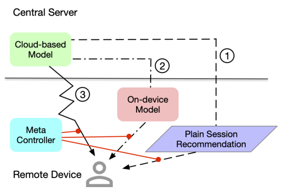
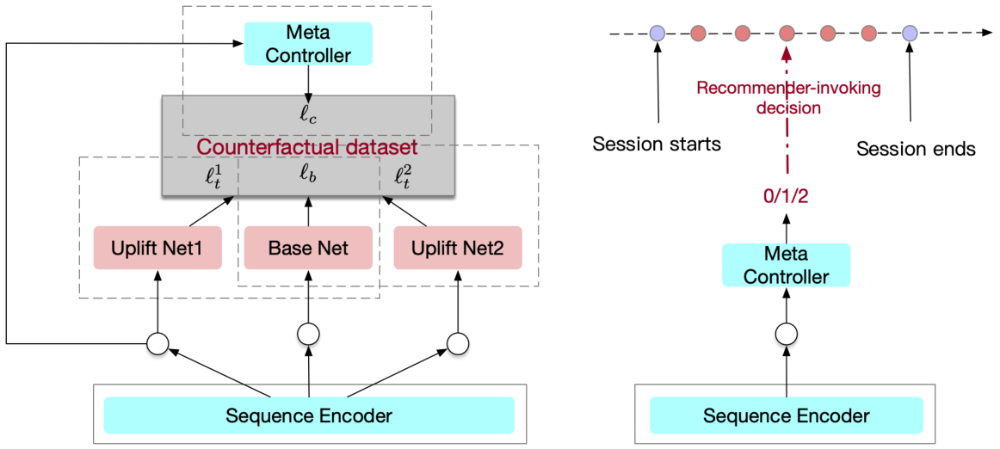

Device-Cloud Collaborative Recommendation via Meta Controller (基于元控制器的端云协同推荐)
- 会议/期刊: KDD 2022 (arXiv:2207.03066v1)
- 作者与机构: Jiangchao Yao, Bo Han, Feng Wang, Jingren Zhou, Hongxia Yang 等（上海交大 CMIC、阿里巴巴达摩院、蚂蚁集团、香港浸会大学）
- 推荐链路定位: 会话内重排 / 机制调度（端云协同）
- 研究方向: 去偏公平、可信隐私与工业架构 / 强化学习与动态探索推荐
- 论文原文: https://arxiv.org/abs/2207.03066v1
- 开源代码: 暂未开源
TL;DR (1分钟核心速览)
工业界现有端云协同（EdgeRec/DCCL）是串行的：端侧模型只能在云端下发的有限 item cache 内重排，用户兴趣剧烈变化时既换不出新物品、又等不到云端刷新。本文提出 Meta Controller，在「云会话推荐 \(f_{\text{cloud}}\)／端侧推荐\(f_{\text{device}}\)／云端刷新\(f_{\text{re-fresh}}\)」三种机制间逐会话做三分类调度；为破解控制器缺乏在线样本的困境，用双 uplift 网络从因果视角离线构造反事实样本\(\mathcal{D}_{\text{meta}}\)，并用标签平滑实现刷新调用比例\(\epsilon\) 的硬预算约束。在 Movielens/Amazon/Alipay 上，MCRec 相对云端会话推荐在 Alipay 上 AUC 提升 2.03%（72.39→73.86）、HitRate@1 提升 2.30%（17.85→18.26）。
Background & Motivation (背景与核心矛盾)
- 主流范式: 云端大模型负责从十亿级物品池召回/排序（会话推荐一次刷新 \(K\) 个候选），端侧轻量模型（压缩或 split-deployment）用实时特征在本地 cache 内重排。
- 前人局限: ①串行机制被端侧存储卡死——cache 内的物品无法回应用户兴趣突变；②云端刷新（session 长度为 1 的极端情形）虽感知反馈更快，但面向亿级用户的计算成本不可扩展。
- 核心洞察 (Key Insight): 三种机制的优劣是按用户兴趣变化幅度分工的：兴趣稳定→纯会话推荐即可；兴趣小变→端侧重排足够；兴趣剧变→必须走云端大池刷新。因此最优策略不是固定串行，而是按会话动态选路。
- 本文切入点: 把「选哪条链路」建模为一个可学习的元控制器，其训练样本缺失问题用反事实推断（uplift）离线合成。

Method (核心方法设计)
1. 整体框架 (Overall Architecture)
输入为会话内历史点击 \(H\)（云端仅有\(H_{\text{cloud}}\)，端侧含实时新增\(H_{\text{device}}=H_{\text{cloud}}\cup H_{\text{add}}\)）与侧特征。训练分两阶段：Phase I 训练三个替身模型（共享序列编码器\(\phi_{\text{seq}}\)+ 基线输出网 + 两个 uplift 输出网），对每条样本估计三种机制的 CATE，取 argmax 生成反事实标签，得到\(\mathcal{D}_{\text{meta}}\)；Phase II 在\(\mathcal{D}_{\text{meta}}\)上训练端侧部署的\(f_{\text{meta}}\)，并用标签平滑把云端刷新调用率压到预算\(\epsilon\)以下。线上服务时，\(f_{\text{meta}}\) 读实时行为，输出 one-hot 决策，仅激活对应机制。
flowchart TD
A["会话历史 H_cloud / H_device + 侧特征"] --> B["共享编码器 φ_seq"]
B --> C["g_cloud / g_device / g_refresh 三头 uplift"]
C --> D["CATE 比较 → 反事实标签 c → D_meta"]
D --> E["Meta Controller f_meta（含标签平滑预算约束）"]
E --> F["激活 云会话 / 端侧重排 / 云端刷新"]2. 关键设计拆解 (Key Designs)
- 三机制统一决策目标（把串行改成路由）：云刷新与云会话共享同一模型 \(f_{\text{cloud}}(\cdot)\)，只是刷新时喂入\(H_{\text{device}}\)，故增益来自「特征实时性」而非新模型。控制器目标为
与 MoE 的关键区别是：\(f_t\)全部预训练冻结，只学路由\(f_{\text{meta}}\)，从而避免端侧再背一个大模型。
-
双 Uplift 反事实样本构造（解数据集缺失）：\(P_{\text{meta}}\)下的样本在冷启时不存在，随机策略上线又高风险。故以云会话为对照组，共享\(\phi_{\text{seq}}\)训练\(g_{\text{cloud}},g_{\text{device}},g_{\text{re-fresh}}\)三个替身（T-learner），计算\(\tau_{\text{device}}(h)=g_{\text{device}}(h)-g_{\text{cloud}}(h)\)、\(\tau_{\text{re-fresh}}(h)=g_{\text{re-fresh}}(h)-g_{\text{cloud}}(h)\)，再令\(c=\text{IND}(\tau_{\text{cloud}},\tau_{\text{device}},\tau_{\text{re-fresh}})\)（\(\tau_{\text{cloud}}\equiv 0\)）。刷新头不复用\(g_{\text{cloud}}\)，因为它与云会话特征同形而调用频率不同、分布 non-IID。
-
预算约束的标签平滑与训练目标：刷新受算力硬约束，直接用 \(\mathcal{L}=\text{CE}(c,f_{\text{meta}}(h))\)会突破预算。故当 batch 内预测为刷新类的比例超\(\epsilon\) 时软化标签：
\(c^{-}\) 为第二大预测类别的 one-hot。物理直觉：把「必须刷新」的监督部分改判给次优机制，模型学到的边际收益排序被拉平，调用率自然回落；未超预算时退化为原始 CE。无负采样设计（三分类全监督），推理仅为一次小型前向，端侧开销可忽略。

Experimental Setup & Evaluation Protocol (实验设置与评估协议)
- 数据集与预处理: 每个数据集构造 5 份训练集（2 份训练云端/端侧基模型，3 份学控制器），测试集一份测 CATE、一份测 CTR：
| 数据集 | #Users | #Items | #Samples | 说明 |
|---|---|---|---|---|
| Movielens | 6,040 | 3,706 | 4.82M (CATE 三份同量) / CTR 0.79M+27.0M | 无会话信息，人工模拟 session |
| Amazon | 49,814 | 36,997 | 2.59M×3 / CTR 17.4M+285.8M | 同上，类目跨域 |
| Alipay | 0.6M(CATE)/10.5M(CTR) | 10K | 1M/0.2M/0.3M + CTR 31M/14M | 真实工业「背景词」推荐，含会话与实时特征 |
- 数据划分与防穿越: 按会话做样本级划分（非 Leave-One-Out），构造阶段与 CTR 阶段使用独立测试集，避免同一会话同时出现在 uplift 拟合与效果评估中。
- 排名评测协议: 二阶段混合协议——构造阶段用
AUUC / QINI评估 uplift 排序质量（全量样本按预测分数排序，无采样）；推荐阶段用HitRate@1 / NDCG@5 / AUC，AUC 在每用户正负样本集上逐用户计算后平均（用户内全候选，非全局负采样）。 - 对比基线与超参: 骨干统一为 DIN，对比 CRec（云会话）、ORec（端侧）、CRRec（云刷新）、RMixRec（随机混合三机制）；控制器维度与训练 schedule 见附录，未报显著性检验（工业数据仅给点估计）。
Key Experimental Results (实验关键数据)
1. 主实验对比 (Main Results)
| Methods | Movielens HR@1 | NDCG@5 | AUC | Amazon HR@1 | NDCG@5 | AUC | Alipay HR@1 | NDCG@5 | AUC |
|---|---|---|---|---|---|---|---|---|---|
| CRec (云会话) | 32.22 | 50.13 | 92.46 | 16.27 | 27.36 | 77.04 | 17.85 | 34.96 | 72.39 |
| ORec (端侧) | 36.98 | 55.31 | 93.70 | 17.31 | 28.94 | 77.95 | 17.88 | 35.02 | 72.80 |
| CRRec (云刷新) | 37.28 | 55.85 | 93.88 | 17.56 | 29.24 | 78.98 | 18.09 | 35.41 | 73.35 |
| RMixRec (随机混合) | 35.52 | 53.76 | 93.34 | 17.06 | 28.51 | 77.99 | 17.90 | 35.06 | 72.83 |
| MCRec (w/o 约束) | 37.84 | 56.20 | 93.90 | 17.70 | 29.48 | 79.05 | 18.26 | 35.77 | 73.86 |
| MCRec (\(\epsilon\)=0.5) | 37.87 | 56.19 | 93.88 | 17.68 | 29.48 | 79.03 | 18.14 | 35.62 | 73.45 |
| MCRec (\(\epsilon\)=0.3) | 37.62 | 55.88 | 93.80 | 17.61 | 29.38 | 78.79 | 17.98 | 35.33 | 73.32 |
| MCRec (\(\epsilon\)=0.1) | 37.16 | 55.45 | 93.67 | 17.50 | 29.21 | 78.38 | 17.91 | 35.17 | 73.03 |
| Improv. vs CRec | +17.4% | +12.1% | +1.56% | +8.79% | +7.75% | +2.61% | +2.30% | +2.32% | +2.03% |
2. 消融实验 (Ablation Study)
| 配置 | Movielens HR@1 | AUC | Amazon HR@1 | AUC | Alipay HR@1 | AUC |
|---|---|---|---|---|---|---|
| ①云会话 + ②端侧 | 36.72 | 93.60 | 17.31 | 77.95 | 17.82 | 72.78 |
| ①云会话 + ③云刷新 | 37.27 | 93.88 | 17.56 | 78.98 | 17.95 | 73.21 |
| ②端侧 + ③云刷新 | 37.88 | 93.90 | 17.70 | 79.05 | 17.98 | 73.34 |
| 三机制全用 (MCRec) | 37.84 | 93.90 | 17.70 | 79.05 | 18.26 | 73.86 |
| — AUUC/QINI (vs CRec) | ORec 0.0337/0.0322 | CRRec 0.0338/0.0322 | ORec 0.0025/0.0043 | CRRec 0.0065/0.0111 | ORec 0.024/0.010 | CRRec 0.037/0.033 |
3. 关键实验发现 (Key Findings)
- 机制互补性可被控制器兑现，但随机混合无效：RMixRec 在 Alipay 上仅 17.90（甚至略胜 ORec 的 17.88 后又逊于 CRRec 的 18.09），说明三机制收益高度样本相关；MCRec 相对 CRec 在 Movielens 上 HR@1 提升 5.62 个绝对点（+17.4%），远超任一单机制相对 CRec 的提升。
- 实时特征是主增益，云会话负责「慢变兴趣」兜底：两两组合中 ②+③（端侧+刷新）最优（三数据集均为 HR@1 最高），但 Alipay 上三路全开仍比 ②+③ 再高 0.28（17.98→18.26），印证云会话在兴趣平稳段提供不可替代的基线；Amazon 上 CRRec 的 QINI=0.0111 是 ORec（0.0043）的 2.6 倍，说明大物品池场景刷新收益更显著。
- 预算 \(\epsilon\)的边际收益呈单调递减、且低预算仍优于纯会话：Alipay 上\(\epsilon\)从 1.0→0.1，HR@1 由 18.26 降至 17.91（-1.9%），AUC 73.86→73.03，但仍高于 CRec 的 17.85/72.39。图 6 显示标签平滑后实际调用率紧贴约束虚线，\(\epsilon\ge0.8\)时\(\lambda\) 不动（原调用率已达标），验证约束机制可精确调控。
Highlights & Limitations (亮点、对比与审稿批判)
- 与代表作对比 (vs. Prior Work): EdgeRec 用 split-deployment 在固定候选集内重排，DCCL 用端侧学习做个性化，二者都是「云端→端侧」单向串行；AdaRequest 同时期提出两模式互补但未解决控制器样本问题。本文首次把三机制做成可学习路由，并用 uplift 提供离线监督信号。
- 可迁移亮点: ①「共享编码器 + 基线头 + 多 uplift 头」的样本构造范式可迁移到任意「多策略择优」场景（召回通道选择、粗排级联深度选择）；②标签平滑做决策类比例约束比后置阈值/拉格朗日乘子更易在 batch 级实现。
- 审稿级局限批判: ①需同时维护 3 个替身模型与 5 份训练集，offline-online 一致性依赖 T-learner 近似 CATE 的准确性，误差会直接污染路由标签；②Movielens/Amazon 的会话为人工模拟，缺乏线上 A/B 与端侧推理延迟/能耗实测，\(\epsilon\)与\(\lambda\) 靠网格搜索，泛化性论证偏弱。
Rating (四维评分)
- 方法创新性 (Novelty): ⭐⭐⭐⭐ （把端云协同从串行重排重构为三机制路由，并用 uplift 反事实样本解冷启，思路清晰但因果建模本身为已有 T-learner 的直接套用）
- 评估协议与实验扎实度 (Protocol & Experiments): ⭐⭐⭐ （三数据集含真实工业 Alipay，AUUC/QINI+CTR 双阶段评测完整，但缺显著性检验与线上验证，两个公开集为模拟会话）
- 写作与数学规范度 (Clarity & Rigor): ⭐⭐⭐⭐ （\(f(\cdot)\)与\(g(\cdot)\)的线上/替身区分讲得干净，公式紧凑；\(\lambda\)与\(\epsilon\) 的自适应关系仅给经验曲线未给算法）
- 工业落地与复现价值 (Industrial & Practical Value): ⭐⭐⭐⭐ （端侧仅跑一次小前向、预算可控，落地路径明确；但未开源且复现需三套 DIN 训练数据，工程复现成本高）